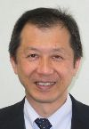

Organizing Committee / International Scientific Program Committee
Shinya Toyokuni
Shinya Toyokuni graduated with an MD from Kyoto University, Japan in 1985,
and obtained his PhD in pathology from Kyoto University Graduate School
of Medicine in 1991. He is a professor of Department of Pathology and Biological
Responses, Nagoya University Graduate School of Medicine. He is a member
and a representative of the SFRR-Asia Committee, and is a director in the
SFRR-Japan.
He serves as the President of the Japanese BioIron Society, and a councilor member of the Japanese Cancer Association and the Japanese Society of Pathology. He is an Associate Editor for Free Radical Research (the official journal of SFRR-Asia), Journal of Clinical Biochemistry and Nutrition (the official journal of SFRR-Japan), Archives of Biochemistry and Biophysics, Cancer Science and Pathology International. He also serves as the Editor-in-chief for Nagoya Journal of Medical Science. He obtained the SFRR-Japan Award of Scientific Excellence in 2009.
His research interests focus on the role of oxidative stress (especially, iron overload) in carcinogenesis and he has been working on renal cell carcinoma and asbestos-induced mesothelioma. Recently, he is extending these works for clinical application and risk evaluation of novel nanomaterials.